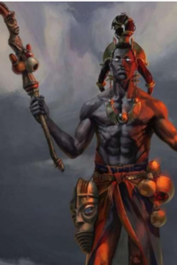

ESÚ
Saudação: epá ESÚ, Laroyè ESÚ
ORÍKÌ TI ÈSÚ
Iyìn o, iyìn o Èsú n má gbò o
Iyìn o, iyìn o Èsú n má gbò o
Iyìn o, iyìn o Èsú n má gbò o
Iyìn o, iyìn o Èsú n má gbò o
Èsú láaróyè, Èsú láaróyè
Iyìn o, iyìn o Èsú n má gbò o
Èsú Láàlú Ogiri Òkò Ebìtà Okùnrin
Iyìn o, iyìn o Èsú n má gbò o
Èsú òta òrìsà
Iyìn o, iyìn o Èsú n má gbò o
Osétùrá l’oruko bàbá mó ó
Alágogo ìjà l’oruko ìyá npè o
Iyìn o, iyìn o Èsú n má gbò o
Èsú Òdàrà, omokùnrin Ìdólófin
O lé sónsó sórí orí esè elésè
Iyìn o, iyìn o Èsú n má gbò o
Kò jé, kò jé kí eni nje gbe e mì
Iyìn o, iyìn o Èsú n má gbò o
A kìì lówó láì um ti Èsú kúrò
A kìì láyò láì um ti Èsú kúrò
Iyìn o, iyìn o Èsú n má gbò o
Asòntún se òsì láì ní ítijú
Iyìn o, iyìn o Èsú n má gbò o
Èsú àpáta somo olómo lénu
O fi okúta dípò iyó
Iyìn o, iyìn o Èsú n má gbò o
Lóògemo òrun a nla kálù
Pàápa-wàrá, a túká máse sà
Iyìn o, iyìn o Èsú n má gbò o
Èsú máse mi, omo elòmíran ni o se
Èsú máse, Èsú máse, Èsú máse